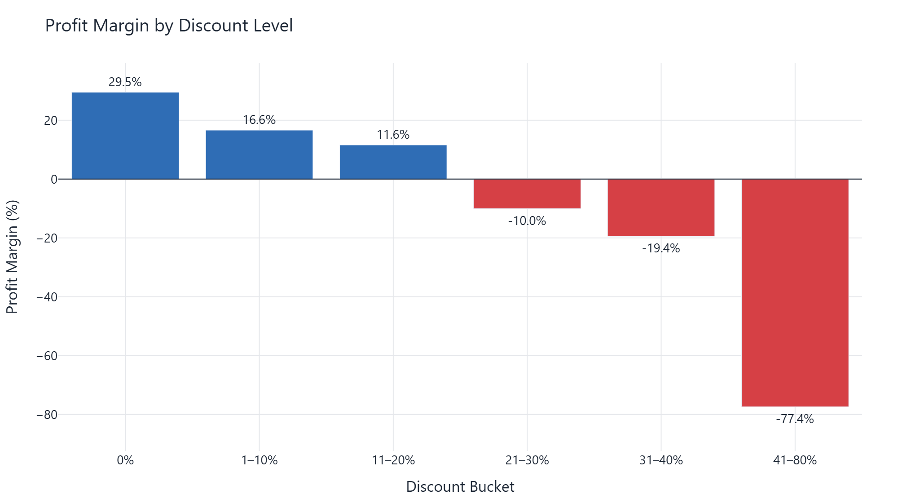
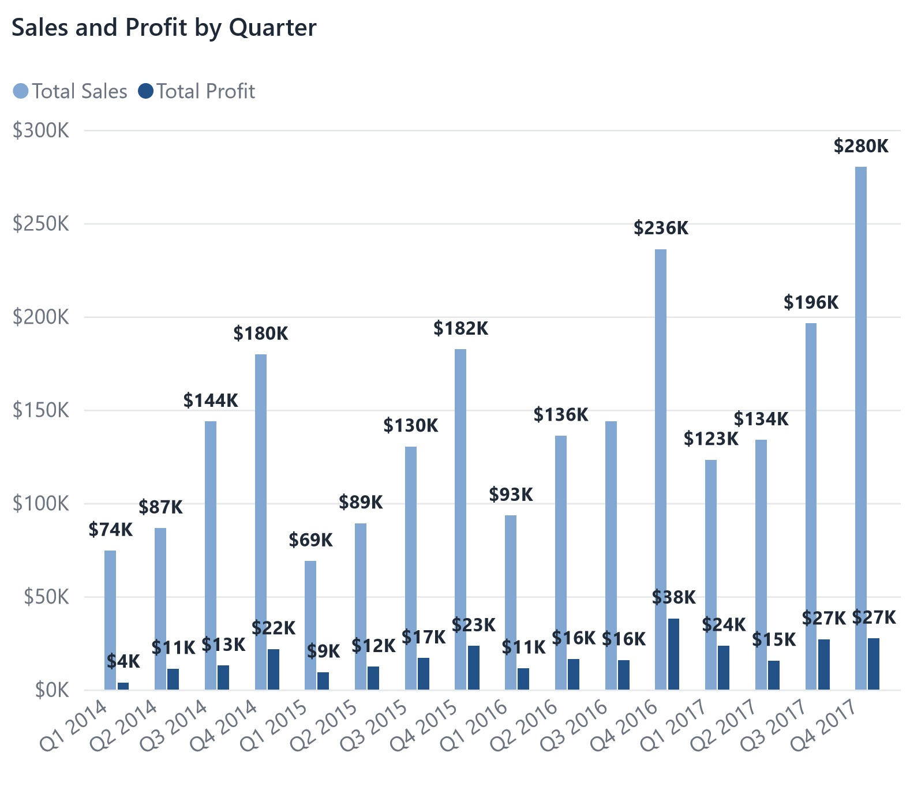
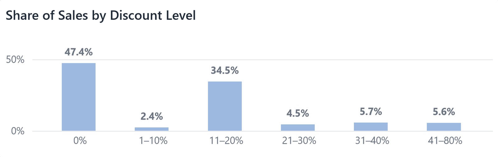
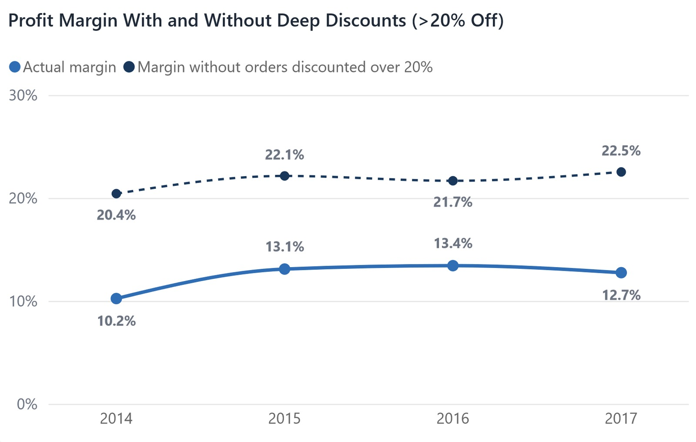
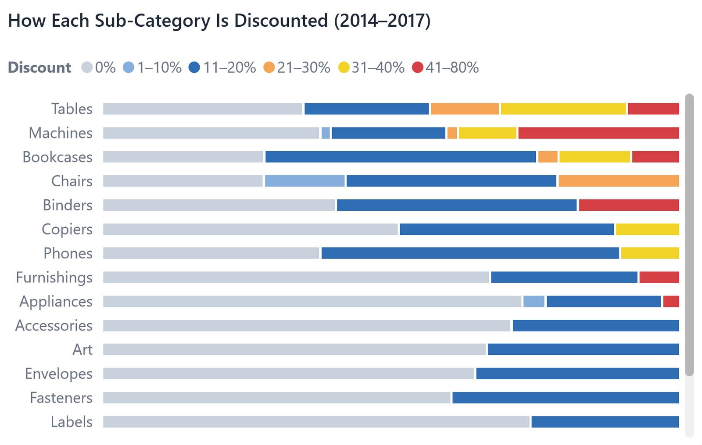
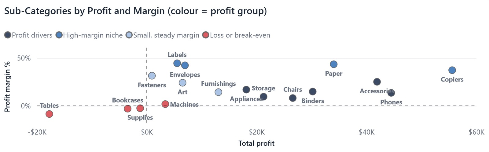
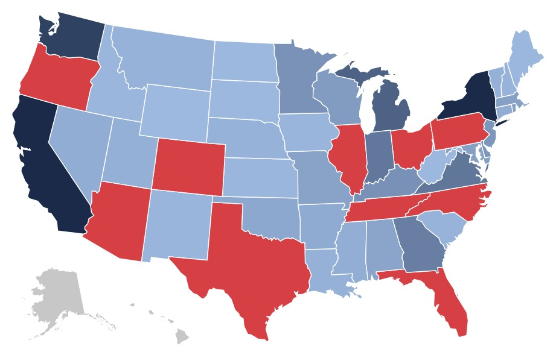
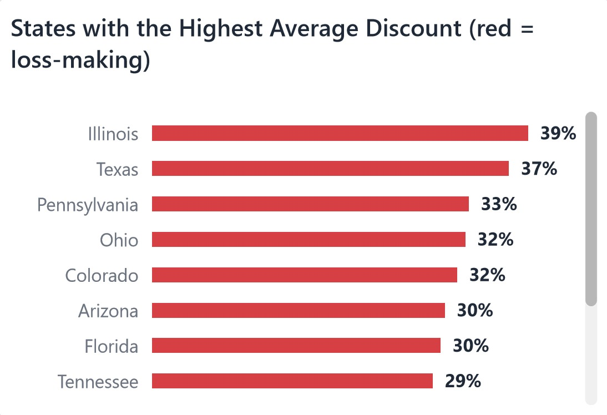
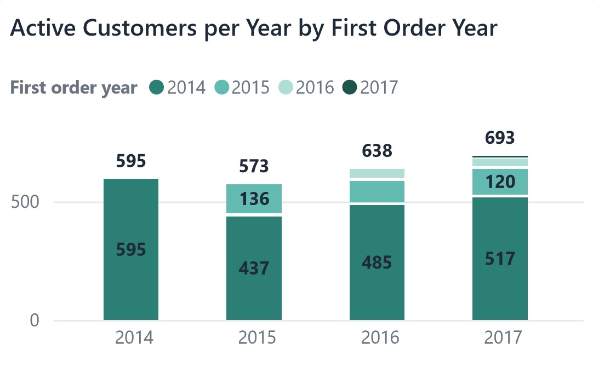
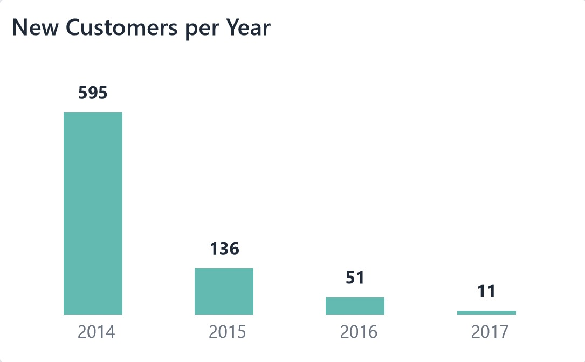

Power BIDAXPower QueryPython EDA
Superstore Sales Performance
Sales grew 51% in four years. Why did profit not grow faster, and what should management change?
Read the analysis report (6 pages, PDF) ↗
Open analytical dashboard (6 pages, PDF) ↗
Open management dashboard (1 page, PDF) ↗
$2.3M
sales
$286K
profit
12.5%
profit margin
5,009
orders
-$135K
lost at >20% off
All figures for 2014-2017.

The short answer is deep discounts. Orders sold at more than 20% off lost $135K, and 97% of them lost money. If those orders had just broken even, profit would have been $422K instead of $286K.
Margin turns negative above 20% off: 29.5% with no discount, -10% at 21-30%, -77% above 40%.
What the data shows
Visuals from the Power BI dashboard. Click any chart to enlarge it.

1. Sales grew, profit did not keep up
Sales rose every year and peaked at $280K in Q4 2017, while quarterly profit stayed between $4K and $38K.
2. The cause: deep discounts


3. Which products


4. Where


5. A second problem: no new customers


Other findings
- Furniture sells well but earns little: 32% of sales, 6% of profit. Tables and bookcases lose money.
- Five products lost $22K: 3D printers, a laser printer and conference tables sold at 28-53% off.
- A small group of customers brings most of the profit: the top 20% bring 81%, while 155 customers cost more than they bring in.
- Customers stay, new ones stopped coming: 87.5% retention in 2017, but only 11 new customers that year (595 in 2014).
- Sales follow the calendar: September, November and December bring 43% of yearly sales; January and February only 7%.
Recommendations
- Cap discounts at 20%; higher needs a manager's approval. Up to $135K of profit is at stake.
- Test the cap in Texas first and compare with Virginia (no discounts, 26% margin).
- Review costs on tables and bookcases; drop items that lose money at any price.
- Set a minimum price for expensive machines such as 3D and laser printers.
- Give the top ~160 customers a personal contact; review deals with the 155 loss-making ones.
- Run acquisition campaigns in January and February with cheap, high-margin items.
- Plan stock and staff for the autumn peak, and don't discount when people already buy.
What I did
- Python EDA. Data quality checks, profitability by category and region, discount impact, shipping speed, customer cohorts. The EDA found the patterns; the dashboard shows them to the business.
- Data model. A star schema in Power BI: one fact table (one row per order line) and five dimensions (date, customer, product, geography, discount band), shaped in Power Query.
- 125+ DAX measures. Year-over-year and YTD, "profit if deep discounts broke even", customer retention and cohorts, Pareto profit share, and titles that update with the filters.
- Two audiences, two dashboards. A one-page view for executives and a six-page drill-down for pricing and sales teams.
Go deeper:
GitHub repository (EDA notebook, DAX notes) ·
Data: Sample Superstore, 9,994 order lines, 2014-2017